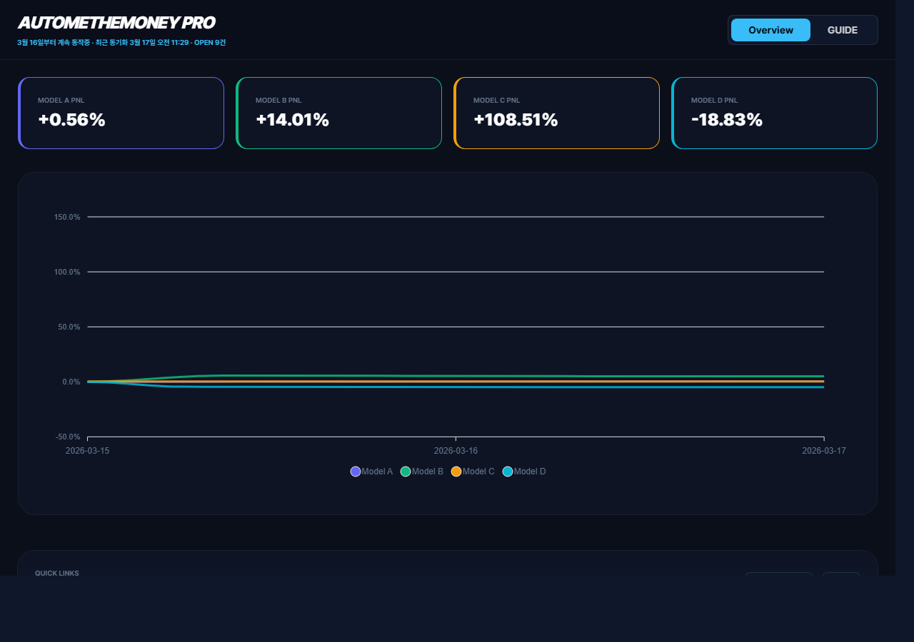
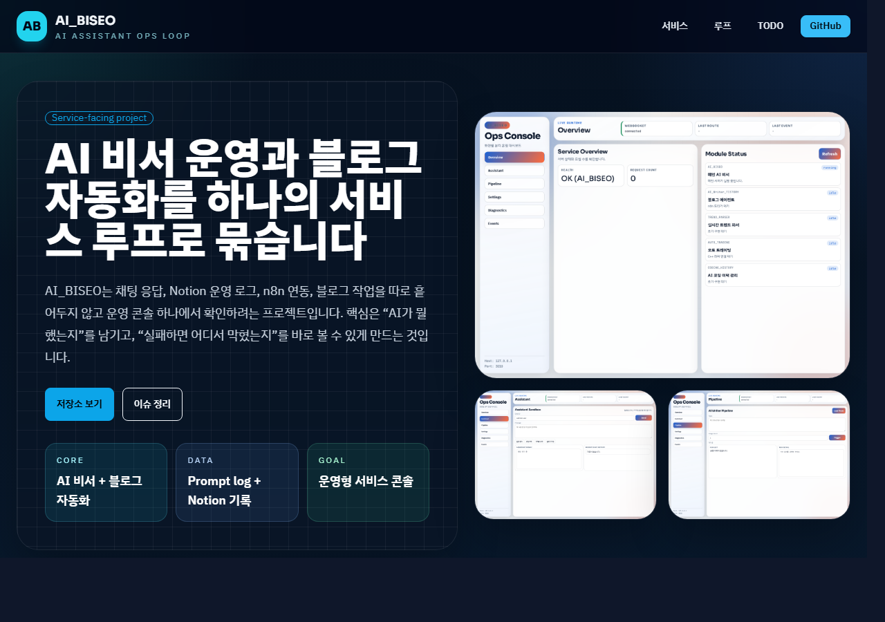
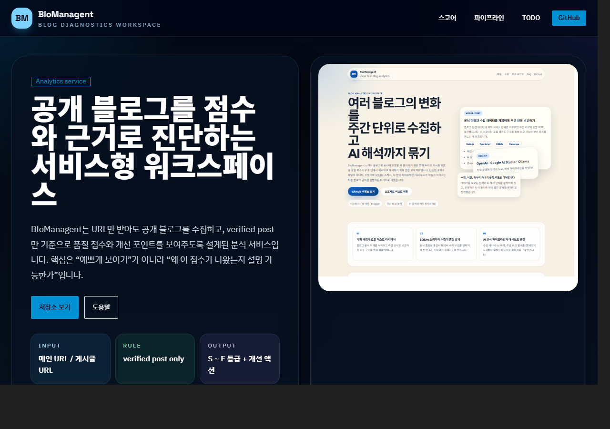
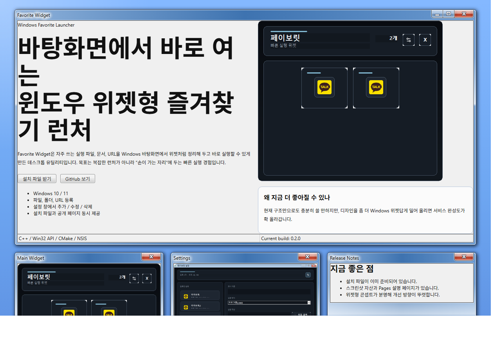
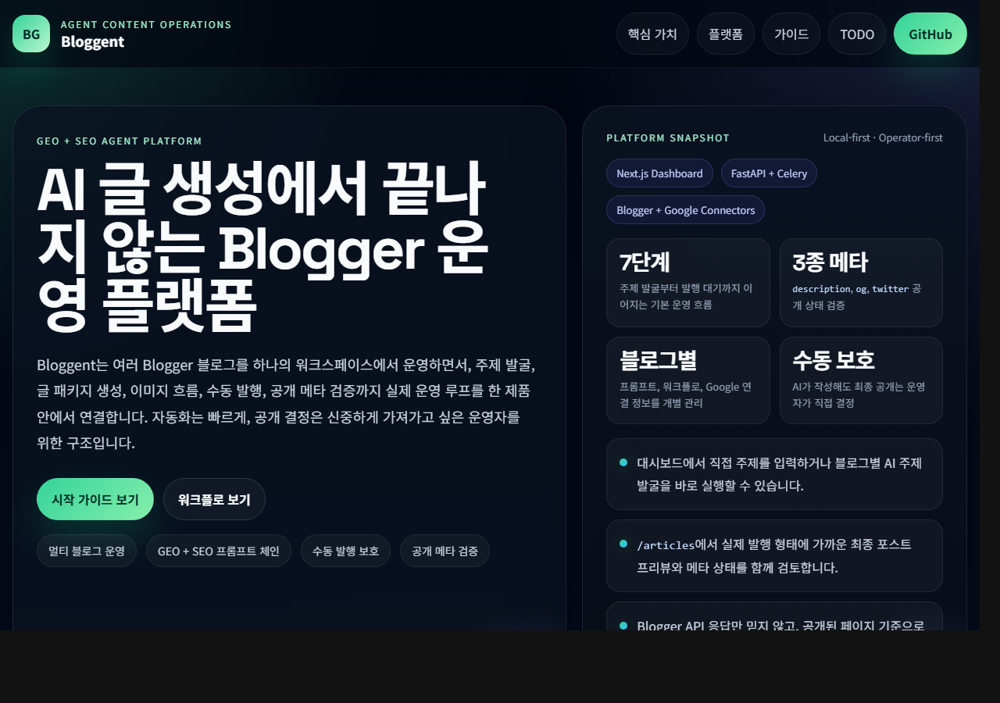

Command Deck
Project Hub Control Surface
generated 2026-04-03 02:55 UTC
Featured Builds

Trading Ops
Automethemoney
전략, 리스크, 리포트를 한 화면에 모으는 운영 콘솔
자동매매 전략 상태, 일별 손익, 시그널 해석, Supabase 기반 운영 흐름을 함께 다루는 트레이딩 콘솔입니다.
- Audience
- 트레이딩 운영 / 실험 관리
- Next Focus
- paper/live 권한 분리, 손실 경보, 전략별 비교

Automation Ops
AI_BISEO
AI 비서 응답과 운영 자동화를 묶는 개인 Ops 루프
AI 비서 응답, Notion 로그, n8n 자동화, Telegram 알림 흐름을 하나의 운영 서비스로 엮는 프로젝트입니다.
- Audience
- 운영자 / AI 자동화 워크플로
- Next Focus
- 운영용 키 분리, 실패 알림, 버전 비교 로그

Analytics Dashboard
BloManagent
URL 수집과 비교 리포트를 잇는 분석 대시보드
블로그 URL 수집, 등급 산출, 주간 비교 리포트, 시각적 설명을 연결하는 분석 제품 실험입니다.
- Audience
- 콘텐츠 운영 / 분석 리포트
- Next Focus
- 비동기 수집, 공유 리포트, 등급 근거 시각화

Desktop Utility
Favorit
파일과 URL을 위젯처럼 여는 실행 즐겨찾기 런처
Windows 바탕화면에서 자주 쓰는 파일, 폴더, URL을 위젯처럼 빠르게 실행하도록 만든 데스크톱 런처입니다.
- Audience
- Windows 사용자 / 생산성 도구
- Next Focus
- 검색, 그룹 정렬, 설정 백업, SmartScreen 대응 문서

Publishing Studio
BloggerGent
멀티 채널 블로그 운영을 위한 AI 발행 스튜디오
여러 Blogger 계열 채널을 서비스처럼 운영하기 위해 발행 흐름, 검수 단계, 채널 전략을 묶는 콘텐츠 스튜디오입니다.
- Audience
- 콘텐츠 팀 / 멀티 채널 운영
- Next Focus
- 승인 단계, 콘텐츠 캘린더, 발행 QA 체크리스트